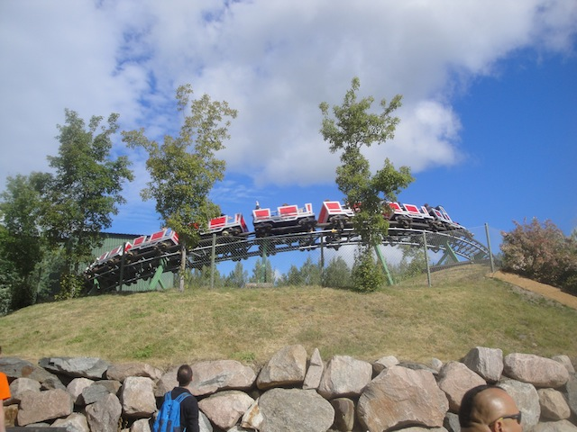

| |
Gruvbanan Review

We're here at Skara Sommerland to ride Gruvbanan. You get in the cars and off you go. We go around a turn slowly, though to be fair, the turn is sort of an upward helix. This leads us inside a building. Ooh. What could possibly be inside? Finally, my life long question will finally be answered! What's inside the building of Gruvbanan at Skara Sommerland? As you can tell, my life long questions truly are pathetic. =) And sad to say, the answer is NOTHING!!! ABSOLUTELY NOTHING!!! Just an empty building with a downward helix, and since this is a powered coaster, we get a kick of speed before going in, and the speed doesn't really change going down it. We break out of the patheticaly empty building, slow down, and head around another turn. Through some more straight track, down a dip, and we accelerate. I see you trying to trick us into thinking you're powered by gravity. You're not. You can't fool me. ;) We then head around another helix. Just coasting on through it. Oh Sh*t!!! Gotta keep the illusion of gravity alive!!! Slow it down!!! We then head down a dip, and coast in the station for a second lap. And of course, "Lay Your Love On Me" by ABBA is playing in the station, so everyone is dancing as we coast on through before going again. Meh, it's a decent little powered coaster. By European standards, it's pretty tame, but hey. At least we have another powered coaster that's actually something fun to ride and not some pathetic little whoring machine.
4/10
Location: Skara Sommerland
Opened: 1987
Built by: Mack
Last Ridden: June 23, 2014
Gruvbanan Photos

Home
|